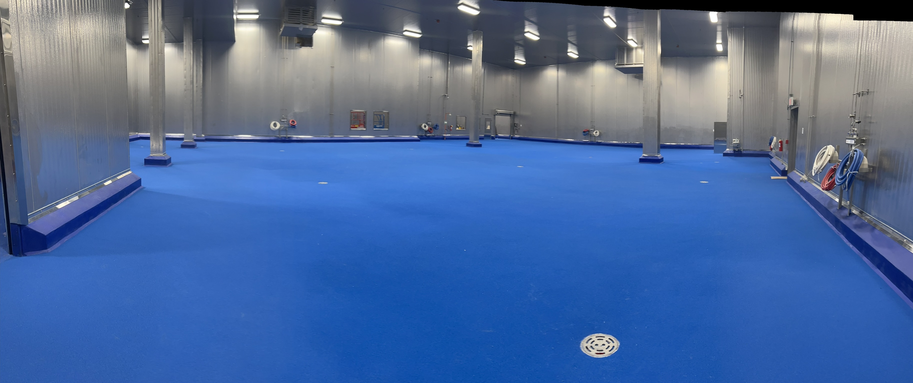

Seafood Processing Flooring
Flooring for Wet Processing Environments
Flooring Solutions for Seafood Processing
Seafood processing creates challenging conditions: constant water, salt, fish oils, and aggressive cleaning. Our systems perform in perpetually wet environments.
Key Benefits
- Constant moisture resistant
- Salt water tolerant
- Fish oil resistant
- Excellent slip resistance
- Antimicrobial surface
- Fast drainage
Typical Areas
Processing floors, Filleting areas, Packing lines, Freezing areas, Loading docks

Ready to Discuss Your Project?
Our team specializes in seafood processing flooring.
Contact Us →